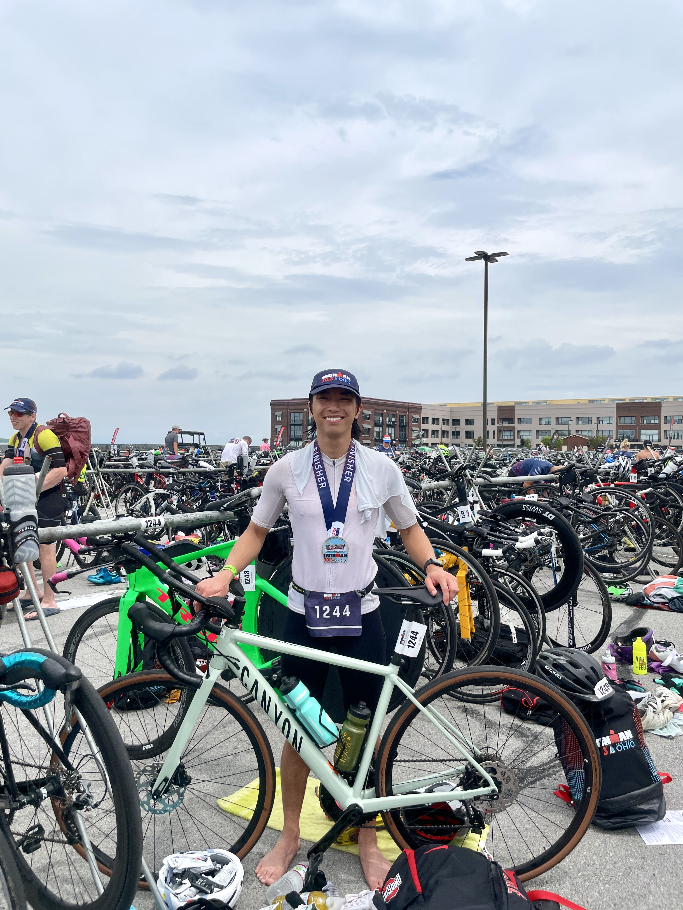

Breaking the System: How My "Race-Day" Mentality Survived My First Ironman 70.3

I showed up to Sandusky, Ohio entirely alone. No support crew, no family, no friends cheering at the barriers. Honestly, It didn’t matter. The vibes at Ironman 70.3 Ohio were completely immaculate. When you have thousands of absolute strangers screaming your name, you don't need a personal fan club.
But I’d be lying if I said I wasn’t sweating a little before the race even started.
Walking into athlete check-in on a baking-hot Saturday, the imposter syndrome hit hard. It felt like every person I bumped into was a former Division 1 collegiate athlete. Everyone looked impossibly fit, riding five-figure time-trial bikes, looking like they did half-Ironmans on a casual Tuesday.
Then there was me. A small guy who just wanted a challenge.
This was only my third triathlon ever. I had done a sprint a year ago and an Olympic distance just four weeks prior. I’ve always had the engine for endurance running. I grew up playing soccer, though I used to find running by itself incredibly boring. That changed my sophomore year of college when I signed up for a half-marathon on a whim during peak flu season, did zero training, and accidentally dropped a killer 1:45. I was instantly hooked on endurance.
After graduating in 2022, I finally found my people. We formed a local triathlon group, constantly pushing each other to PR. But while my friends opted to race Ironman 70.3 Michigan, I wanted to head back to my home state to tackle Ohio. For the first time, I was flying solo.
The Strategy (Or Lack Thereof)
Within our group, I am notoriously known as the "race-day athlete."
I don't believe in Zone 2 training. I don't do interval structures. Every training session I've ever done has just been a threshold long run, ride, or swim. I am a chronic procrastinator who crams 90% of my training into the final month before an event. While my friends were pulling grueling 20+ hour training weeks, I capped myself at 10 to 15 hours. My race-day personality just couldn't handle more than that without getting annoyed with the sport.
"I do these things for the medals, the photos, the memories, the t-shirt, and, let's be real, the bragging rights."
So, when it came to race weekend lodging, I took the budget route. AirBnBs in Sandusky during peak summer are criminally expensive, so I opted to sleep in the back of my car in a parking lot. It was 75 degrees at night and the windows fogged up instantly, but surprisingly, I slept like a baby. I wouldn’t do it again, but hey, it worked.
The Swim: Lake Erie Chooses Violence
Pre-race morning was a blur of darkness, nerves, and fields of $10,000 super-bikes.
Swimming is my kryptonite. In a calm pool, I can hold a respectable 1:50/100m. In open water, my vision goes out the window, I can't swim straight to save my life, and I drop to a 2:50/100m pace. As the sun began to rise, the coordinators announced the water temperature: not wetsuit legal.
I didn't have a high-tech swim skin or a fancy trisuit underneath. I just had to squeeze into my absurdly tight wetsuit anyway, knowing I’d take a time penalty but needing the buoyancy to survive. Standing in line, sweating like a pig in the morning heat, I watched people dancing and laughing with their families. For a split second, I wished I had someone there with me.
Then, right before the horn, the athlete next to me snapped their goggles. It was a nightmare scenario, but the triathlon community is legendary. Another racer immediately handed them a backup pair. I fist-bumped the guy next to me, he told me to have fun, and I dove into Lake Erie.
> First thought: Holy crap, this water is warm.
> Second thought: Lake Erie has chosen violence today.
An incoming storm system had kicked up 15+ mph winds, turning the bay into a washing machine. Every time I turned my head to breathe, a wave would smash me square in the face. By 400 meters, I finally found a rhythm. I focused on staying calm, navigating the chaos, and dodging the stray kicks to the face that come with a mass swim start.
With half a mile to go, my swim cap started slipping off and my goggles began to fog. Old me would have panicked. Instead, I flipped onto my back for a few seconds, adjusted my gear, and kept moving. Feeling good, I sprinted the final stretch to the boat docks.
Swim Time: 46:18 (2:24/100m avg)
Given the massive swells, I had fully expected a 1:00+ time. Overperforming my own expectations gave me an instant surge of confidence. I deliberately walked through Transition 1 to avoid the post-swim dizziness, grabbed my bike, and headed out.
The Bike: Aerodynamics on a Budget
As I sped out onto the road, I looked down at the empty mounts on my bike and realized something hilarious: I had left my entire tire repair kit and maintenance tools sitting on the grass in transition. No insurance. If I got a flat, my race was over. Oopsies. Guess we're riding on faith.
The bike is my absolute favorite discipline. The wind died down, the clouds rolled in to block the sun, and the flat, rural Ohio roads were beautiful.
But I made two critical mistakes within the first hour:
- I forgot to apply anti-chafing cream to my chamois pad. I was chafing like crazy by mile 20.
- I had never practiced grabbing a bottle from an aid station at speed. When I tried, I completely launched a water bottle 60 feet into a field. It was embarrassing, but I managed to grab a few GU gels on the fly.
My fueling strategy was equally chaotic. You’re supposed to consume around 60–90 grams of carbs (roughly two gels) per hour. My small stomach simply isn't used to that. Terrified of a mid-race GI explosion, I had only taken one gel and one energy waffle by the halfway point.
Despite the lack of fuel, I felt like a absolute rocket. I was riding an entry-level aluminum road bike with basic clip-on aero bars, but I passed well over 100 riders, many of whom were spinning on those $10,000 TT bikes I’d envied earlier.
I hammered the final mile downhill into T2, averaging a flat 20.0 mph over the 56 miles. I hit my exact goal. There was only one massive problem: I still had to run a half-marathon.
The Run: Welcome to the Dark Place
The second I swung my leg off the saddle, my body revolted. My quads were stiff as boards, and my gooch was screaming from the lack of anti-chafe cream. But as I ran into the transition pavilion, the crowd was deafening. They didn't know who I was, but they were screaming for me anyway. I couldn't help but smile from ear to ear. The adrenaline masked the pain.
Before the race, I thought a sub-2-hour half marathon would be "easy peasy." I had done a dozen of them in training.
Then I saw the run course layout: a brutal two-loop format where the first half of every loop was entirely uphill.
Within the first 100 meters of running, my brain clicked: I am absolutely screwed.
My hopes of a sub-6-hour total time began to evaporate. My 9:00/mile pace quickly slipped to 9:30, then to 10:00 by mile 3. My body wasn't cramping, and my breathing was fine, but my brain was literally shutting down from starvation. My failure to carb-load on the bike had caught up to me. I hit the wall harder than I ever have in my six years of endurance sports.
At mile 4, with 9 miles left to go, I was on the verge of tears. I genuinely contemplated walking the rest of the way or quitting entirely. I felt like I had been awake for 72 straight hours.
I forced myself to pivot. The aid stations were spaced one mile apart. My new goal was simple: run to an aid station, choke down as much food as humanly possible, walk for a minute to regroup, and run to the next one.
During this dark period, I noticed an older gentleman utilizing the exact same strategy. Without speaking a word, we silently locked eyes and formed an unspoken pact to run together. He was pushing a 9:30 pace, faster than I wanted to go, but I knew if I let him drop me, my race would die right there. He gave me words of encouragement as we finished the first loop. He was a full Ironman finisher; he knew exactly what this pain felt like.
By mile 9, the wheels completely came off. "Drop me," I told him. "I have to walk."
I stood there on the side of the road and openly cried as runners streamed past me. The sub-6-hour goal was gone. He turned back, hugged me, and said, "Don't you dare give up." He told me he’d see me at the finish line.
I watched him run away, took a deep breath, and kept moving at a survivalist 10:30 pace, shoving literally everything into my face. By mile 10, I had consumed six bananas, three energy bars, two GUs, and a liter of water on the run alone.
And then, the sugars finally hit my bloodstream.
The Anime Comeback
In what felt like a literal cinematic movie moment, my brain turned back on. I looked down, whispered "Go time," and picked up my stride.
The pace dropped from 10:30, to 9:00, to an 8:30/mile. The final stretch of the course was entirely downhill. I entered a complete flow state. I started flying past the exact same familiar faces that had passed me while I was crying two miles earlier. The spectator noise rushed back into my ears. The smile returned.
With half a mile left, I checked my total elapsed race time and realized the math: I was tracking to finish around 5:53. Not only was I going to break 6 hours, I was going to beat my own prediction by seven minutes.
I started sprinting at an 7:30/mile pace, tears streaming down my face from pure adrenaline. I ran past the course volunteer with the megaphone guiding multi-lap runners, stopped dead in my tracks, threw my arms around him, and screamed, "FINALLY!"
Then, I turned the corner and hit the coveted red-and-black Ironman carpet—a carpet I had dreamed of running down for six long years.
Official Finish Time
5:52:06
More Than a Medal
They handed me my finisher medal and the classic Ironman cap. The sheer swagger of that hat and the weight of the medal embodied every single ounce of adversity I had just spent nearly six hours fighting through.
As I stood in the post-race chute recovering, I looked around for the man who saved my race. A few minutes later, I saw him coming down the carpet. I walked over, we embraced in a huge hug, and he looked at me and smiled: "I told you you’d never give up."
I never caught his last name, but I will cherish that father-son moment for the rest of my life. Endurance sports aren't actually about beating the person next to you; they’re about human beings keeping each other alive as they push themselves to the absolute edge of their limits. Thank you, Michael.
The triathlon community is unlike anything else on earth. After the race, I hung out around the transition area for an hour just talking to total strangers. In marathons, everyone finishes and leaves. Here, everyone stays to check on each other, trade war stories, and share a mutual respect for the distance.
My "race-day athlete" habits allowed me to survive Ohio, but a full 140.6 Ironman is waiting for me in the future. And for that one? I think I might actually have to learn to love Zone 2.
Until the next start line.